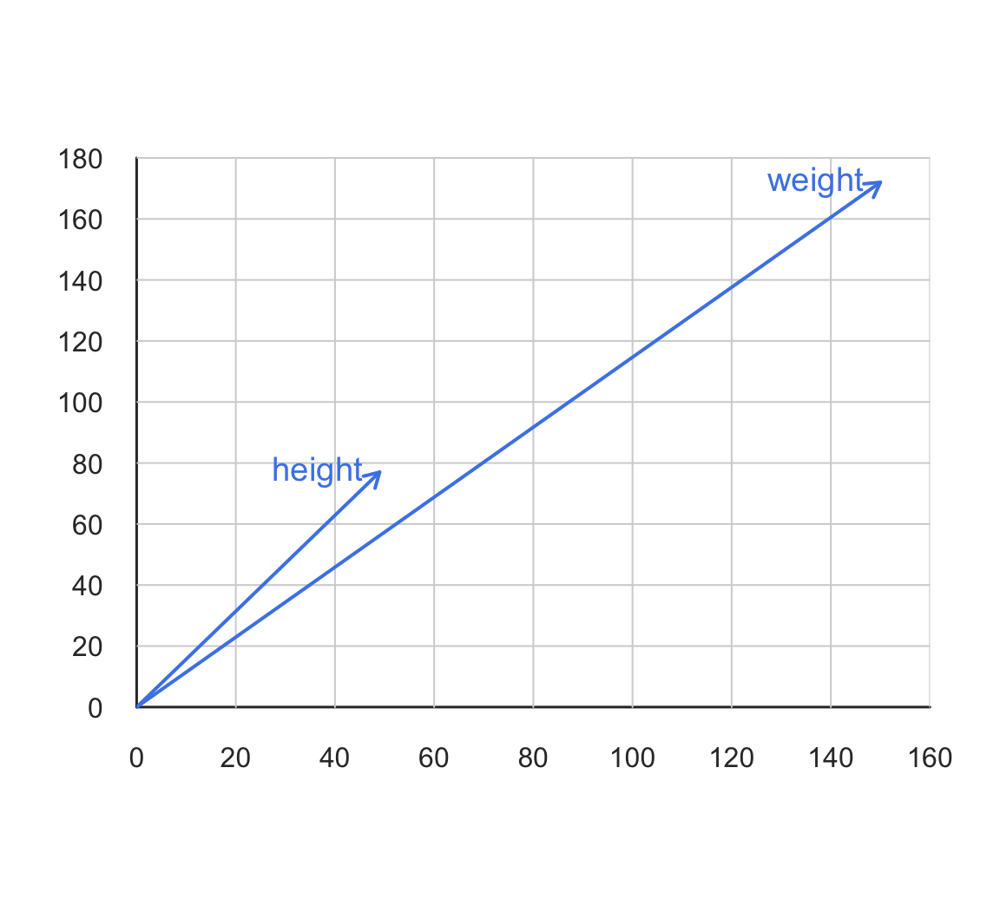

6 Geometric Duality
In chapter Data Matrix we talked about how a data table can be mathematically treated as a data matrix: typically as an array of individuals and variables. In this chapter we take a further step that should let you adopt a geometrical mindset. More specifically, you will learn how to think and look at any data matrix from a geometric standpoint. This is an incredible insightful concept which some authors refer to as the duality of a data matrix.
6.1 Matrix Perspectives
It’s very enlightening to think of a data matrix as viewed from the glass of Geometry. The key idea is to think of the data in a matrix as elements living in a multidimensional space. Actually, we can regard a data matrix from two apparently different perspectives that, in reality, are intimately connected: the rows perspective and the columns perspective. In order to explain these perspectives, let me use the following diagram of a data matrix \(\mathbf{X}\) with \(n\) rows and \(p\) columns, with \(x_{ij}\) representing the element in the \(i\)-th row and \(j\)-th column.

Figure 6.1: Duality of a data matrix
When we look at a data matrix from the columns perpective what we are doing is focusing on the \(p\) variables. In a similar way, when looking at a data matrix from its rows perspective, we are focusing on the \(n\) individuals. This double perspective or duality for short, is like the two sides of the same coin.
6.1.1 Rows Space
We know that human vision is limited to three-dimensions, but pretend that you had superpowers that let you visualize a space with any number of dimensions.
Because each row of the data matrix has \(p\) elements, we can regard individuals as objects that live in a \(p\)-dimensional space. For visualization purposes, think of each variable as playing the role of a dimension associated to a given axis in this space; likewise, consider each of the \(n\) individuals as being depicted as a point (or particle) in such space, like in the following diagram:

Figure 6.2: Rows space
In the figure above, even though I’m showing only three axes, you should pretend that you are visualizing a \(p\)-dimensional space (imaging that there are \(p\) axes). Each point in this scape corresponds to a single individual, and they all form what you can call a cloud of points.
6.1.2 Columns Space
We can do the same visual exercise with the columns of a data matrix. Since each variable has \(n\) elements, we can regard the set of \(p\) variables as objects that live in an \(n\)-dimensional space. For convention purposes, and in order to distinguish them from the individuals, we use an arrow (or vector) to graphically represent each variable:

Figure 6.3: Columns space
Analogously to the rows space and its cloud of individuals, you should also pretend that the image above is displaying an \(n\)-dimensional space with a bunch of blue arrows pointing in various directions.
6.1.3 Toy Example
To make things less abstract, let’s consider a toy \(2 \times 2\) data matrix of weight and height values measured on two individuals Leia and Luke. Here’s the code in R to create a matrix X for this example:
# toy matrix
X <- matrix(c(150, 172, 49, 77), nrow = 2, ncol = 2)
rownames(X) <- c("Leia", "Luke")
colnames(X) <- c("weight", "height")
X
weight height
Leia 150 49
Luke 172 77Space of individuals: If you look at the data in X from the individuals standpoint, each of them can be depicted as a dot in the 2-dimensional space of variables weight and height:

Space of variables: If you look at the data in X from the variables standpoint, each of them can be depicted as a vector in the 2-dimensional space spanned by Leia and Luke:

6.1.4 Dual Space
The following figure illustrates the dual perspective of a data matrix. The standard convention is to represent individuals as points in a \(p\)-dimensional space; and in turn represent variables as vectors in an \(n\)-dimensional space.
Figure 6.4: Rows and columns perspectives